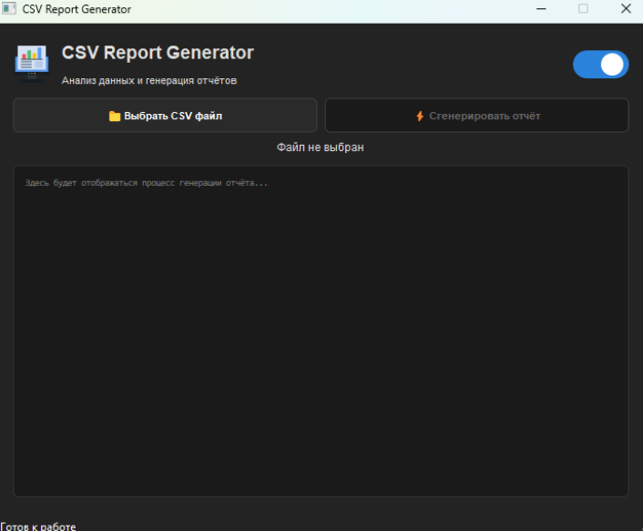
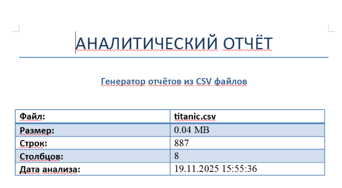
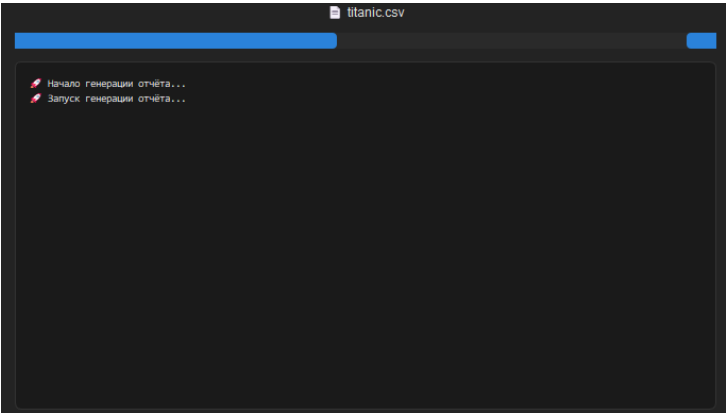

📊 CSV Report Generator
Приложение для автоматического анализа CSV-файлов и генерации Word-отчётов. Включает статистику, графики и оценку качества данных.
Python
Pandas
PyQt5
Matplotlib
python-docx
Что делает программа
Загружает CSV-файл, автоматически определяет кодировку и разделитель, проводит полный статистический анализ (средние, медианы, выбросы, корреляции) и формирует готовый Word-отчёт с графиками и рекомендациями. Интерфейс на PyQt5 с тёмной и светлой темой, плюс консольный режим для автоматизации.
Скриншоты

